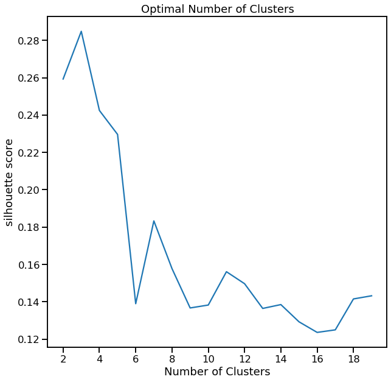
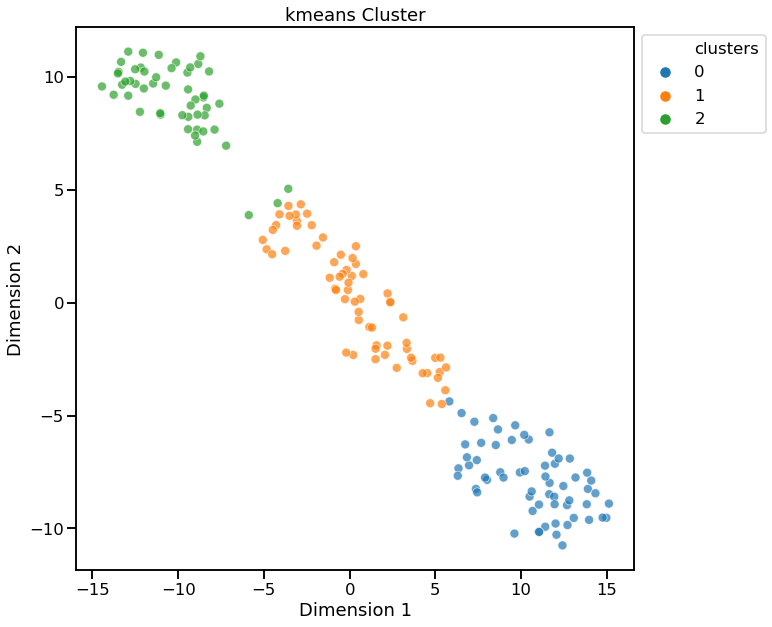

Cluster Analysis¶
[1]:
import data_describe as dd
Load dataset from scikit-learn¶
[2]:
from sklearn.datasets import load_wine
import pandas as pd
df = load_wine(as_frame=True).data
target = load_wine().target # For supervised clustering
Cluster Defaults¶
[3]:
c = dd.cluster(df)
[5]:
c.show()
[5]:
<matplotlib.axes._subplots.AxesSubplot at 0x1f82f8ff988>

Using Plotly¶
[6]:
dd.cluster(df, target=target, viz_backend="plotly")
None
[6]:
<data_describe.core.clusters.KmeansClusterWidget at 0x1f96000eb88>
Show Cluster Search for K-Means¶
[7]:
cl = dd.cluster(df, target=target)
cl.cluster_search_plot()
[7]:
<matplotlib.axes._subplots.AxesSubplot at 0x1f960c7fcc8>

Visualize using t-SNE for Dimensionality Reduction¶
[8]:
dd.cluster(df, target=target, dim_method="tsne")
<matplotlib.axes._subplots.AxesSubplot at 0x1f960d24248>
[8]:
<data_describe.core.clusters.KmeansClusterWidget at 0x1f960cf5988>

Return Reduced Data with Cluster Labels¶
[9]:
cl.viz_data.head()
[9]:
| x | y | clusters | |
|---|---|---|---|
| 0 | 3.316751 | -1.443463 | 0 |
| 1 | 2.209465 | 0.333393 | 0 |
| 2 | 2.516740 | -1.031151 | 0 |
| 3 | 3.757066 | -2.756372 | 0 |
| 4 | 1.008908 | -0.869831 | 0 |
Return Cluster Labels Only¶
[10]:
cl.clusters
[10]:
array([0, 0, 0, 0, 0, 0, 0, 0, 0, 0, 0, 0, 0, 0, 0, 0, 0, 0, 0, 0, 0, 0,
0, 0, 0, 0, 0, 0, 0, 0, 0, 0, 0, 0, 0, 0, 0, 0, 0, 0, 0, 0, 0, 0,
0, 0, 0, 0, 0, 0, 0, 0, 0, 0, 0, 0, 0, 0, 0, 1, 1, 2, 1, 1, 1, 1,
1, 1, 1, 1, 1, 1, 1, 0, 1, 1, 1, 1, 1, 1, 1, 1, 1, 2, 1, 1, 1, 1,
1, 1, 1, 1, 1, 1, 1, 0, 1, 1, 1, 1, 1, 1, 1, 1, 1, 1, 1, 1, 1, 1,
1, 1, 1, 1, 1, 1, 1, 1, 2, 1, 1, 0, 1, 1, 1, 1, 1, 1, 1, 1, 2, 2,
2, 2, 2, 2, 2, 2, 2, 2, 2, 2, 2, 2, 2, 2, 2, 2, 2, 2, 2, 2, 2, 2,
2, 2, 2, 2, 2, 2, 2, 2, 2, 2, 2, 2, 2, 2, 2, 2, 2, 2, 2, 2, 2, 2,
2, 2])
KMeans - Specifying number of clusters¶
[11]:
dd.cluster(df, n_clusters=4)
<matplotlib.axes._subplots.AxesSubplot at 0x1f960dc7588>
[11]:
<data_describe.core.clusters.KmeansClusterWidget at 0x1f960dc2c48>

KMeans - Using Davies-Bouldin for finding optimal n_clusters¶
[12]:
cl = dd.cluster(df, target=target, metric='davies_bouldin_score')
cl
<matplotlib.axes._subplots.AxesSubplot at 0x1f9610e1a88>
[12]:
<data_describe.core.clusters.KmeansClusterWidget at 0x1f960d9aa88>

[13]:
cl.cluster_search_plot()
[13]:
<matplotlib.axes._subplots.AxesSubplot at 0x1f96117cd48>

HDBSCAN¶
[14]:
dd.cluster(df, method="hdbscan", viz_backend="plotly")
None
[14]:
<data_describe.core.clusters.HDBSCANClusterWidget at 0x1f9611fe448>